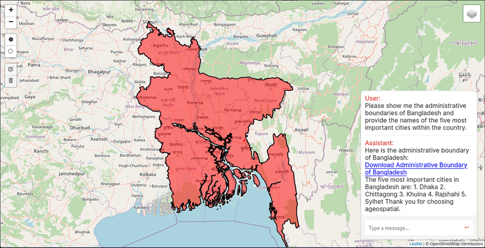

지도를 읽는 언어모델
챗봇에게 “우리 동네에서 가장 가까운 소각장이 어디냐”고 물어보면, 대개 그럴듯하지만 틀린 답이 돌아온다. 언어모델은 지리에 약하다. GeoLLM과 지식그래프는 이 빈틈을 어떻게 메우는가.
왜 언어모델은 지도를 읽지 못하는가
언어모델에게 “서울에서 부산까지 얼마나 머냐”고 물으면 그럴듯한 숫자가 나온다. 학습 데이터에 그 사실이 자주 등장했기 때문이다. 그러나 “내 위치에서 반경 500m 안에 있는 어린이보호구역을 모두 알려 줘”라고 물으면 이야기가 달라진다. 모델은 내 좌표를 모르고, 반경 500m라는 위상 연산을 수행할 수단이 없으며, 어린이보호구역의 최신 경계 데이터를 가지고 있지도 않다. 그럼에도 모델은 침묵하지 않는다. 자신 있게, 그러나 틀린 목록을 지어낸다.
이것은 모델의 결함이라기보다 종류의 불일치다. LLM은 사실을 좌표계 위에서 ‘계산’하는 엔진이 아니라, 맥락 다음에 올 가장 그럴듯한 문장을 ‘예측’하는 기계다. 지리 질의의 핵심인 거리·포함·인접 같은 공간 관계는 텍스트의 통계적 패턴이 아니라 기하학적 연산으로만 정확히 풀린다. 두 세계는 문법이 다르다. 그래서 지리 질문을 언어모델에게 통째로 맡기면, 모델은 자기가 가장 잘하는 일 — 말을 지어내는 일 — 로 그 빈틈을 메운다. 우리가 흔히 환각(hallucination)이라 부르는 현상이다.
필자는 KAIST에서 국토교통부·국토지리정보원과 연계한 한국형 지오공간 언어모델(K-GeoLLM) 기획의 맥락에서 이 문제를 붙들었다. 목표는 분명했다. 사용자가 자연어로 지리 질문을 던지면, 시스템이 이를 정확한 공간 연산으로 번역해 실제 GIS 데이터 위에서 답을 구하고, 그 결과를 다시 사람이 읽을 문장과 지도로 돌려주는 것. 언어의 유연함과 기하학의 엄밀함을 한 파이프라인 안에서 화해시키는 일이었다.
언어를 공간 연산으로 번역하다
첫 번째 접근은 언어모델을 파이프라인의 ‘두뇌’로 쓰되, 실제 계산은 전용 엔진에 위임하는 구조였다. 기반 모델로는 한국어·영어를 함께 다루는 Llama-3 8B Bilingual을 골랐고, LoRA/PEFT 기반 SFT(지도학습 파인튜닝)로 지리 도메인에 맞췄다. 학습은 NVIDIA A6000 GPU 2장으로 돌렸다. 8B라는 크기는 의도적 선택이었다 — 온프레미스로 공공 데이터를 다뤄야 하는 환경에서, 거대 상용 모델에 데이터를 넘기지 않고도 굴러가야 했기 때문이다.
파이프라인은 다섯 단계로 흐른다.
① 의도 인식 (Intent Recognition)
먼저 사용자의 문장이 무엇을 원하는지 분류한다. “가장 가까운 ○○”은 최근접 질의, “반경 안의 ○○”은 버퍼 질의, “A에서 B까지”는 거리 질의다. few-shot 프롬프트와 개체명 인식(NER)을 결합해 질의 유형과 지명·시설명 같은 개체를 뽑아낸다. 이 단계가 흔들리면 뒤의 모든 계산이 엉뚱한 곳을 향하므로, 파이프라인에서 가장 공들인 관문이다.
② RAG 검색
다음으로 질의와 관련된 문맥·데이터를 끌어온다. FAISS 벡터 데이터베이스에서 의미적으로 가까운 문서를 찾고, 동시에 PostgreSQL/PostGIS에서 실제 공간 레코드를 조회한다. 벡터 검색이 “무엇에 관한 질문인가”를 좁힌다면, 관계형·공간 DB는 “그 답의 원천 데이터”를 제공한다. 둘의 역할이 다르다.
③ 함수 호출 (Function Calling)
여기가 핵심이다. 모델은 거리나 포함 관계를 직접 ‘상상’하지 않는다. 대신 ST_DWithin(반경 내 포함), ST_Distance(거리 계산) 같은 PostGIS 공간 함수를 JSON 형태의 툴 콜로 호출한다. 위상 연산은 전적으로 데이터베이스가 수행하고, 모델은 어떤 함수를 어떤 인자로 부를지만 결정한다. 계산의 책임을 계산 엔진에 되돌려 준 것이다.
④ 결과 종합
DB가 돌려준 좌표·거리·목록을 모델이 다시 자연어로 엮는다. 여기서 모델은 잘하는 일 — 표를 문장으로 풀고, 맥락을 붙이고, 읽기 좋게 정리하는 일 — 만 한다. 숫자는 계산 엔진이 보증한 값이므로 지어낼 여지가 줄어든다.
⑤ 지도 시각화
마지막으로 Leaflet 기반 지도 위에 결과를 얹는다. 텍스트만으로는 감이 오지 않는 공간 관계도, 지도 위 점과 반경으로 보면 즉시 이해된다. 답의 신뢰도 역시 눈으로 확인된다.

지도를 지식그래프로 다시 짜다
파이프라인이 성숙하면서 더 근본적인 질문이 떠올랐다. 지리 정보를 애초에 언어모델이 다루기 좋은 구조로 표현할 수는 없을까. 그렇게 나온 것이 GNLM(Graph-Native Language Model)이다. 핵심은 지리 지식을 텍스트가 아니라 RDF 트리플(주어–관계–목적어)의 지식그래프로 표현한 데 있다. 우리가 구축한 그래프는 노드 58,882개와 관계 80,088개로 이루어진, 도로명주소 기반 공간 추론이 가능한 구조였다.
지식그래프의 힘은 관계가 명시적이라는 데서 나온다. “이 건물은 이 도로에 접한다”, “이 행정동은 이 시군구에 속한다” 같은 사실이 텍스트 속에 흩어져 있지 않고, 탐색 가능한 간선(edge)으로 못 박혀 있다. 그 위에 우리는 14-Strategy Reasoning Router를 얹었다. 들어온 질문의 성격에 따라 어떤 추론 전략으로 그래프를 순회할지 라우팅하는 장치다. 최근접 탐색, 경로 추적, 속성 조회, 집계 — 질문마다 최적의 경로가 다르기 때문이다.
그리고 마지막 방어선으로 Fact Validation Layer를 두었다. 모델이 생성한 답을 곧이곧대로 내보내지 않고, 그 안의 사실 주장을 지식그래프에 다시 대조해 뒷받침되는지 확인하는 단계다. 그래프에 없는 관계를 주장하면 걸러진다. 이 검증 계층의 정확도는 96.7%로, 답의 신뢰성을 떠받치는 마지막 자물쇠 역할을 했다.
Chapter 4. 측정구조가 크기를 이긴다
세 접근을 같은 250문항 QA 셋으로 채점했다. 결과는 구조의 손을 확실히 들어 주었다.
| 방식 | 구성 | QA 정확도 |
|---|---|---|
| 순수 LLM | 맥락 없이 모델 단독 | 57.1% |
| 단순 RAG | 벡터 검색 + 생성 | 31.4% |
| GNLM | 지식그래프 + 검증 | 88.4% |
눈에 띄는 것은 단순 RAG의 부진이다. 문맥을 붙였는데 오히려 순수 LLM보다 못했다. 지리 질의에서 벡터 검색이 끌어온 “의미적으로 비슷한” 문서는, 정작 필요한 정확한 좌표·관계와 어긋나기 일쑤였기 때문이다. 비슷함은 지리에서 정답이 아니다. 반면 관계를 명시적으로 붙들고 답을 검증한 GNLM은 88.4%까지 올라섰다. 데이터를 어떻게 구조화하느냐가 얼마나 많이 검색하느냐보다 중요했다.
Chapter 5. 뜻밖의 발견왜 8B 모델이 GPT-5.2를 이겼는가
실험에서 가장 놀란 대목은 따로 있었다. 같은 GNLM 구조 안에 여러 모델을 갈아 끼워 비교했더니, qwen3:8b, llama3.1:8b 같은 소형 오픈모델이 GPT-5.2, Claude Sonnet 4.5 같은 상용 대형 모델을 7~11%p 앞선 것이다. 상식과 어긋나는 결과였다. 더 큰 모델이 더 잘하는 게 당연하지 않은가.
답은 역할 분담에 있었다. GNLM 구조 안에서 언어모델이 맡는 일은 ‘지식을 기억하는 것’이 아니라 ‘그래프를 순회하고 검증된 사실을 문장으로 엮는 것’이다. 사실의 원천은 지식그래프이고, 진위는 검증 계층이 판정한다. 이 구조에서는 모델이 얼마나 많이 아느냐보다, 주어진 구조를 얼마나 충실히 따르느냐가 중요해진다. 대형 모델의 방대한 파라미터 지식은 오히려 잉여였고, 때로는 그래프가 준 사실 대신 자기 기억을 앞세우다 틀렸다.

모델을 키우기 전에, 구조를 세운다
지리 QA라는 좁은 창을 통해 본 풍경은, 사실 생성형 AI 전반에 던지는 물음이기도 하다. 우리는 성능을 끌어올리려 할 때 반사적으로 더 큰 모델을 떠올린다. 그러나 GeoLLM과 GNLM의 경험은 그 반대를 가리켰다. 문제를 올바른 구조로 재정의하면 — 계산은 계산 엔진에, 사실은 지식그래프에, 검증은 검증 계층에 맡기면 — 8B 모델로도 상용 거대 모델을 앞설 수 있었다.
다만 분명히 해 둘 것이 있다. 이 시스템은 공공 정책·국토 계획 같은 민감한 판단을 대체하지 않는다. 소각장 입지, 매립지 영향, 주택가치 변화 같은 질문의 답은 시민의 삶에 직접 닿는다. GeoLLM은 그런 판단을 내리는 전문가에게 정확한 공간 정보를 빠르게 건네는 보조 도구일 뿐, 최종 결정자는 언제나 사람이어야 한다. 좋은 도구의 미덕은 자신의 한계를 정직하게 드러내는 데 있다. 모델이 강해질수록, 그 한계를 설계하는 일은 더 중요해진다.
참고
- D. Park et al. (제2저자), “A Declarative Geographic Knowledge Graph Framework,” IEEE Access, 2026. DOI: 10.1109/ACCESS.2026.3695549.
- D. Park et al. (제2저자), “GNLM: A Graph-Native Language Model With Road Name Address-Based Spatial Reasoning,” IEEE Access, 2026. DOI: 10.1109/ACCESS.2026.3705784.
- 본문의 수치(QA 정확도, 노드·관계 수, 모델 비교 등)는 해당 연구의 대표 결과로, 구체적 값은 데이터셋·평가 셋·모델 버전에 따라 달라질 수 있다.